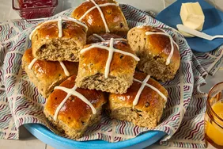
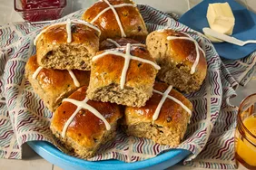

Cajun Chicken Pasta
This creamy Cajun chicken pasta with bell peppers and mushrooms is easy to make, full of spicy flavor, and ready to eat in 30 minutes. Perfect for busy weeknights!
Prep Time - 15 mins
Cook Time - 15 mins
Total Time - 30 mins
Servings - 2
Ingredients
- 4 ounces linguine or other pasta
- 2 skinless, boneless chicken breast halves
- 2 teaspoons Cajun seasoning
- 2 tablespoons butter
- 1 red bell pepper, sliced
- 1 green bell pepper, sliced
- 4 fresh mushrooms, sliced
- 1 green onion, chopped
- 1 cup heavy cream
- ¼ teaspoon dried basil
- ¼ teaspoon lemon pepper, or to taste
- ¼ teaspoon salt
- ⅛ teaspoon garlic powder
- ⅛ teaspoon ground black pepper
- ¼ cup grated Parmesan cheese
Step 1
Step 2
Step 3
Step 4
Step 5
Step 6
Step 7
Step 8
Directions
Gather the ingredients.

Bring a large pot of lightly salted water to a boil. Add pasta and cook until al dente, 8 to 10 minutes. Drain.
Meanwhile, cut chicken breast into strips; place in a plastic zipper bag and add Cajun seasoning. Shake to coat.
Melt butter in a large skillet over medium heat. Add chicken and cook, stirring, until browned and almost cooked through, 5 to 7 minutes.
Add bell peppers, mushrooms, and green onion. Cook, stirring, 2 to 3 minutes.
Reduce the heat and stir in cream, basil, lemon pepper, salt, garlic powder, and black pepper. Heat through. Add cooked pasta, toss, and heat through.
Sprinkle with Parmesan and serve.
Best served hot, Enjoy!
Other Related Recipes
 Classic Hearty Beef Stew
Classic Hearty Beef Stew
 Easy Homemade Pizza Dough

Hot Cross Buns
Easy Homemade Pizza Dough

Hot Cross Buns
 Vegetarian Chickpea Sandwich Fillin
Vegetarian Chickpea Sandwich Fillin